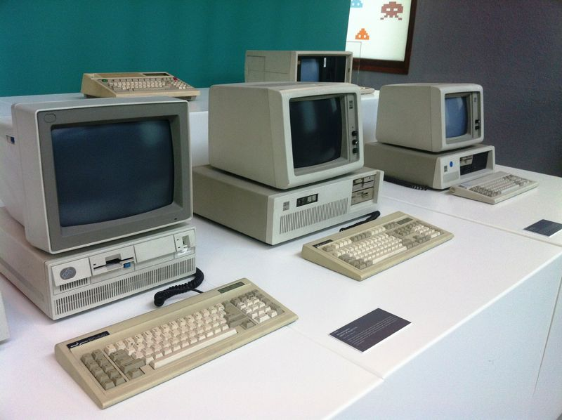
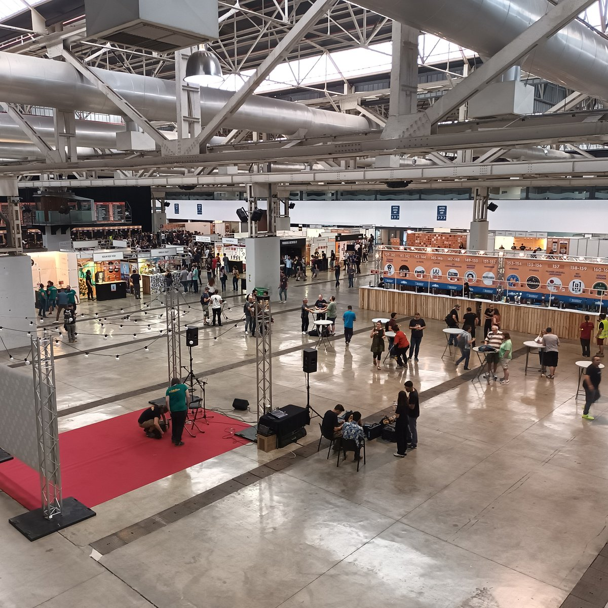

SMX 1r CURS
Activitats Complementàries
Experiències i aprenentatges fora de l'aula

Visita al MNACTEC
Vam visitar el Museu Nacional de la Ciència i la Tècnica de Catalunya (MNACTEC) a Terrassa, una experiència clau per entendre els fonaments de la nostra professió.
La sortida ens va permetre explorar l'evolució tecnològica: des de les grans màquines de la revolució industrial fins a la informàtica clàssica, podent veure de prop ordinadors històrics i la cèlebre màquina de xifratge Enigma.
SMX 2n CURS
La Farga (L'Hospitalet)
Durant el segon curs, vam assistir al recinte de La Farga de L'Hospitalet per participar en el saló orientat als graus de formació professional del sector digital.
Ens vam centrar en l'oferta formativa de videojocs i multimèdia, descobrint els motors de desenvolupament actuals, les tècniques de disseny 3D i les diverses especialitzacions que ofereix el mercat laboral en aquest àmbit.
